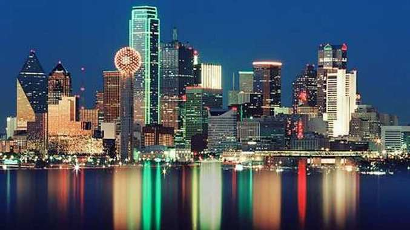
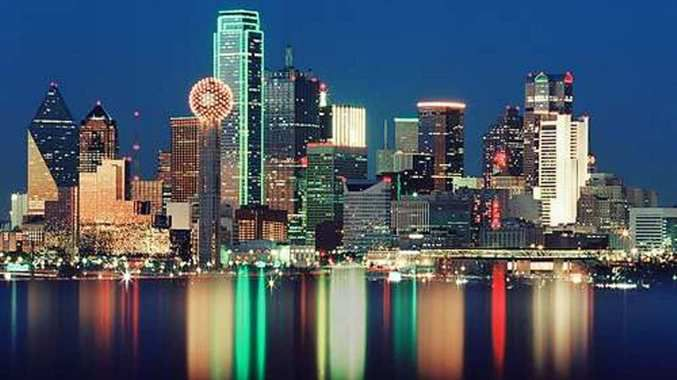

Welcome to Texas
Texas, the second-largest state in the United States by both land area and population, is known for its rich history, diverse landscapes, and vibrant economy. As a state that embodies both modern innovation and traditional values, Texas offers a unique blend of cultural heritage and progressive development.
From the deserts of West Texas to the forests of East Texas and Gulf Coast beaches, our state offers a variety of landscapes and outdoor adventures. Texas’ rich history, including the iconic Battle of the Alamo, is celebrated in historic sites, museums, and festivals.
Texas, the second-largest state in the United States by both land area and population, is known for its rich history, diverse landscapes, and vibrant economy. As a state that embodies both modern innovation and traditional values, Texas offers a unique blend of cultural heritage and progressive development. The state's economy is bolstered by key industries like energy, technology, healthcare, and agriculture, making Texas one of the nation's leading economic powerhouses.
Texas is also home to a dynamic cultural scene, with influences from Native American, Spanish, Mexican, European, and African traditions that are woven into the state’s music, art, food, and festivals. Known for its renowned Tex-Mex cuisine and BBQ, Texas also hosts major cultural events like Austin's South by Southwest (SXSW) festival, the Houston Rodeo, and the State Fair of Texas in Dallas.
Learn more about Texas tourism at the official Texas tourism website.
Top Attractions in Texas
- The Alamo
- San Antonio River Walk
- Space Center Houston
Famous Texas Cuisine
- BBQ
- Tex-Mex
- Chicken Fried Steak
Largest Cities in Texas
| City | Population | Region |
|---|---|---|
| Houston | 2.3 million | Southeast Texas |
| San Antonio | 1.5 million | South-Central Texas |
| Dallas | 1.3 million | North Texas |